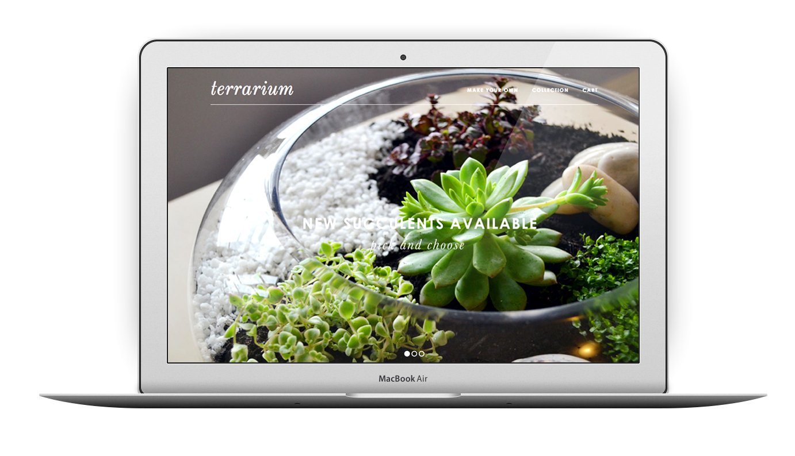
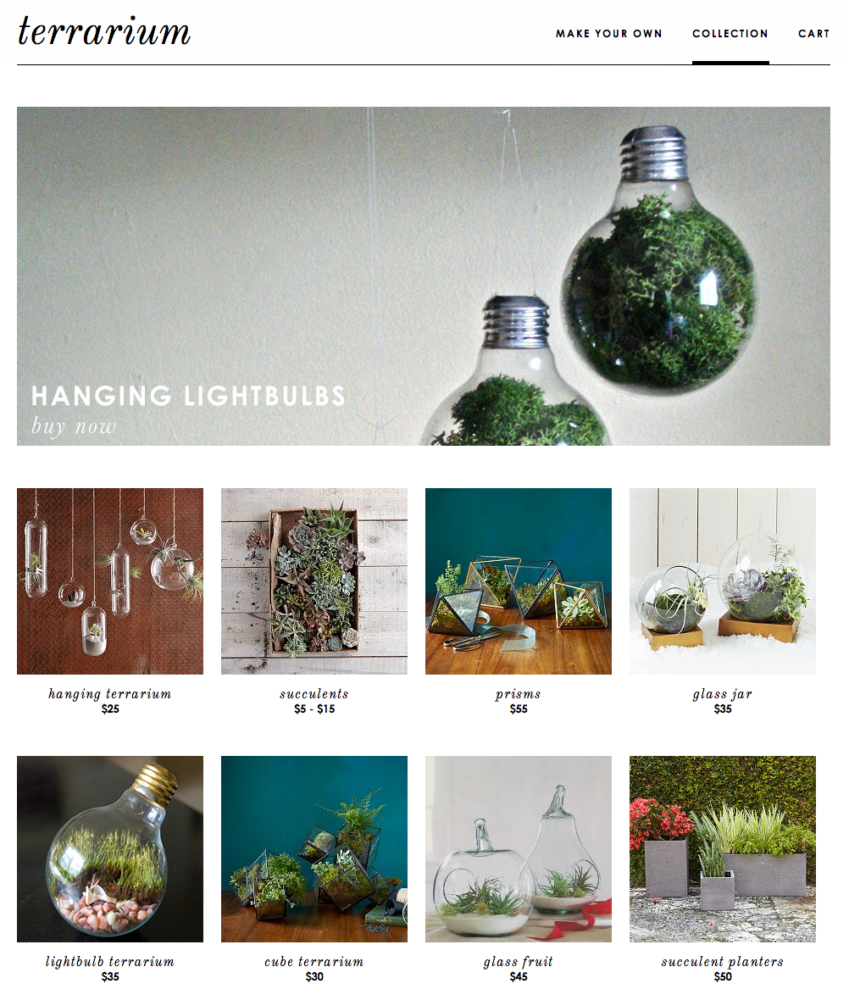
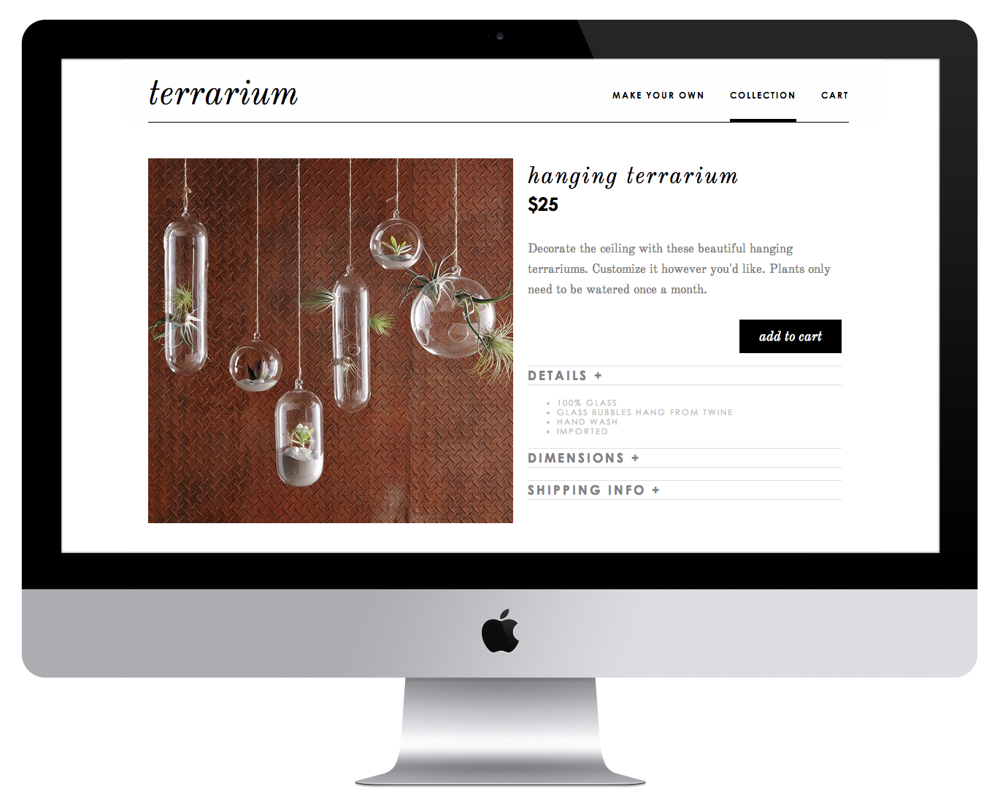

I challenged myself to create a mock-website for a "Terrarium" store in a day. I wanted to see if I could design and code rapidly to create a fully functioning website with no back-end. I've been a fan of terrariums for the past year, so I decided to use them as my subject, especially since the images available to me were rich and beautiful.

In order to practice using jQuery and Javascript, I created three additional pages: a scrolling one-page "create" page, a store page, and a store item page.

